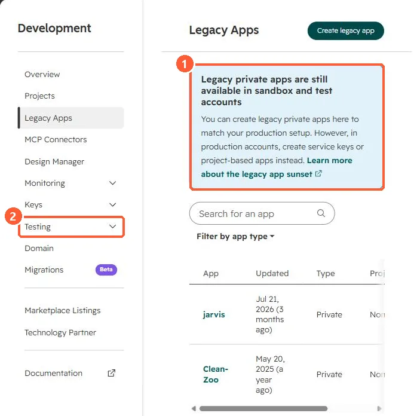

Short answer
A standard sandbox (Enterprise) copies the structure of your production account so you can test workflows, integrations and pages, then deploy supported changes back. A production account can have one standard and one development sandbox at a time. A developer test account is a free test environment for apps; HubSpot says it expires after 90 days without API calls, can send marketing email only to its own users, and enrolls at most 100,000 records per day in workflows.
1. Legacy apps in test environments
The Legacy Apps page in my demo portal says legacy private apps can still be created in sandbox and test accounts to match production. In production, HubSpot points to service keys or project apps. The Testing menu sits under Development.


2. Which one
- Sandbox: workflow logic, properties, pipelines, pages, permissions. Some asset types do not copy, and assets that depend on them do not sync either.
- Test account: building and installing apps without production data.
3. Related
Uploading projects to a sandbox and private apps moved to Legacy Apps.